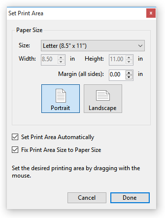

File/Set Print Area
The Set Print Area command sets the area of the map that will be printed when printing courses. If you do not set the print area, the program will automatically chose a print area based on the paper size you chose when creating the event.. If you create an OCAD file from a course, the print area becomes the default print area in the resulting OCAD file.
There are two sub-commands: either This Course or All Courses. Just as they sound, selecting "This Course" sets the print area for the currently displayed course, selecting "All Courses" changes the print area for all the courses. (Note: if All Controls is displayed, doing Set Print Area/This Course sets the print area for when the control collection is printed.) When displaying a single part from a course with a map exchange, you can also set the print area for just that part.
After selecting the desired sub-command, the current print area is highlighted in red, and a window appears:

In the "Paper Size" section, you can chose the size of the paper you wish to print on, the orientation of the paper, and the margins along the edge of the paper. The default for the paper size was set when you created the event.
If Set Print Area Automatically is checked (the default), then the print area is automatically set based on the paper size, the map, and the course on the map.
If Fix Print Area Size to Paper Size is checked, then the print area can be repositioned by dragging, but cannot be resized. If it is unchecked, you can set the print area to be larger or smaller than the paper size (small blue squares at the corners and edges of the print area allow resizing).
The displayed print area can be dragged using the mouse: position the mouse on the print area, hold down the left mouse button, and drag the print area to the has small blue squares at each corner and along each edge. While changing the print area, you can also move and zoom the map as usual.
Once the print area is correct, click the "Done" button in the Set Print Area window.